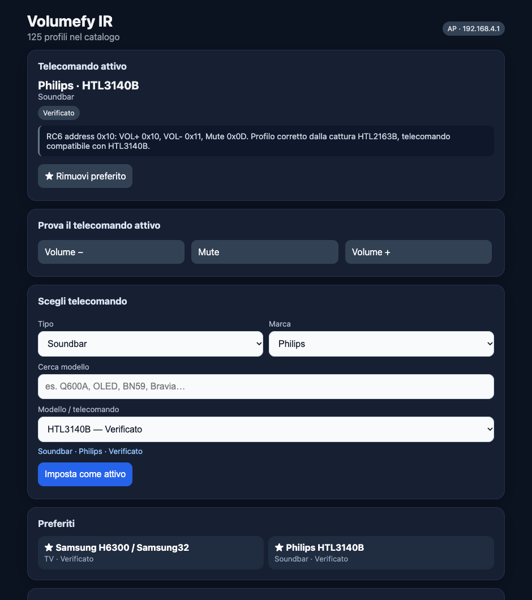
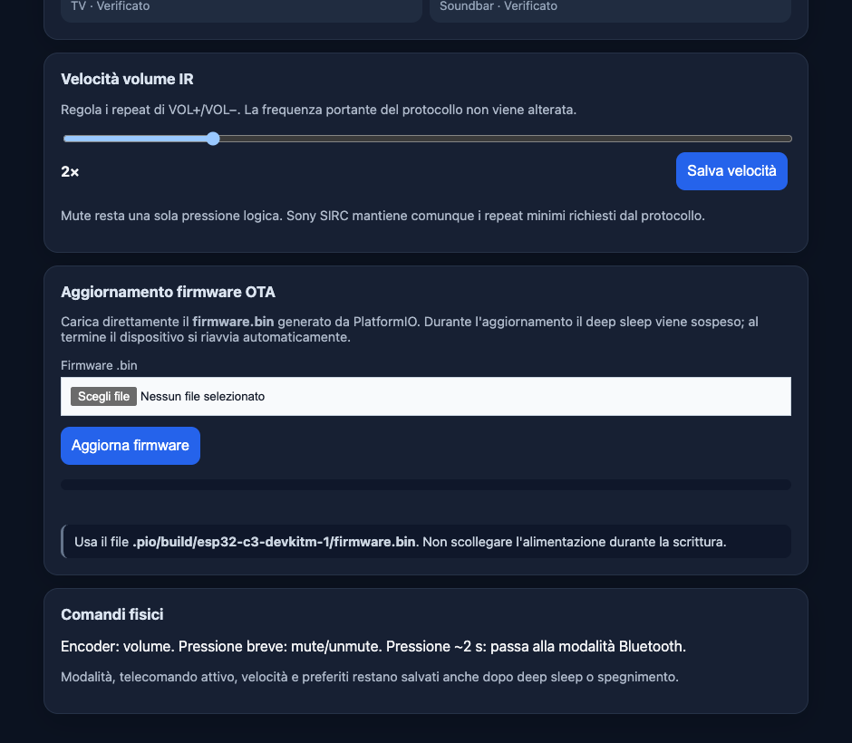
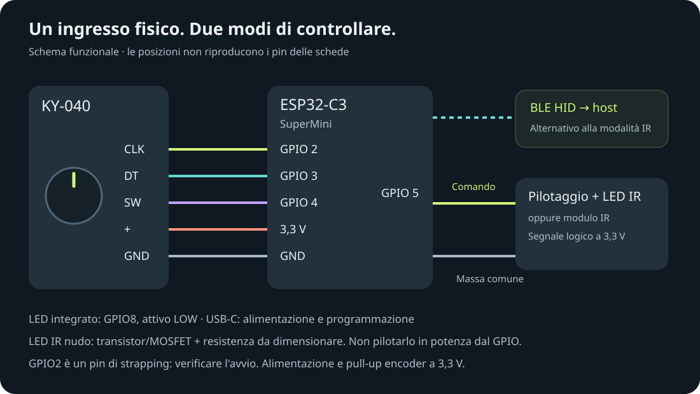

Il computer, sotto mano.
Associa Volumefy come periferica BLE HID e controlla il volume dell'host. In questa modalità il Wi-Fi resta spento. La compatibilità va verificata sul sistema utilizzato.
ESP32-C3 · BLUETOOTH LE + INFRAROSSI
Gira per il volume. Premi per il silenzio.
Dal computer alla soundbar, con la stessa manopola.
Firmware BLE + IR · RC6 Philips · OTA web
Modalità: BLE oppure IR
Profili nel catalogo IR
Ripetizioni volume IR
Inattività prima dello sleep
PERCHÉ VOLUMEFY
Sulla scrivania o accanto al divano: Volumefy porta volume e mute su un controllo fisico dedicato. Invia comandi all'apparecchio scelto, senza trasmettere musica e senza dipendere da un servizio cloud.
Associa Volumefy come periferica BLE HID e controlla il volume dell'host. In questa modalità il Wi-Fi resta spento. La compatibilità va verificata sul sistema utilizzato.
Scegli il profilo dal pannello e punta l'emettitore verso l'apparecchio. Una pressione lunga di almeno 2 secondi passa fra BLE e IR, salvando la scelta e riavviando.
Modalità, telecomando, preferiti e velocità restano salvati. Dopo due minuti senza attività entra in deep sleep; premi per risvegliarlo, rilascia e riprendi il controllo.
IL WEB PANEL · DENTRO IL DISPOSITIVO
In modalità IR, Volumefy crea la propria rete Wi-Fi. Apri il pannello da telefono o computer: nessuna app da installare, nessun router necessario.

Filtra per tipo e marca, cerca il modello e impostalo come attivo. Stato e note aiutano a distinguere codici verificati nelle fonti e famiglie da provare.
VOL−, Mute e VOL+ inviano i comandi del profilo attivo. Verifica la risposta dell'apparecchio prima di usarlo con la manopola.
Salva il profilo attivo e richiamalo dalla griglia. Le preferenze restano in memoria anche dopo lo spegnimento.
Filtri e slider esplorabili. I comandi hardware e l'upload sono disabilitati nella copia pubblica.
Da 1× a 6×, regola le ripetizioni IR e salva il valore. La portante rimane quella del protocollo; Mute resta una pressione logica. Sony conserva i frame minimi richiesti.
Seleziona il file firmware.bin, avvia l'OTA e segui l'avanzamento. Durante la scrittura il deep sleep è sospeso; dopo il successo il dispositivo si riavvia.
Il primo caricamento e il passaggio dalla vecchia versione solo BLE richiedono USB. L'OTA è disponibile solo in IR/AP. Non interrompere l'alimentazione durante la scrittura.

Il pannello locale usa HTTP senza login aggiuntivo: chi accede alla rete può controllare il dispositivo e aggiornarlo. La consultazione dei soli filtri non rinnova il timeout di 120 secondi: se entra in sleep, premi la manopola e ricollegati.
IL CATALOGO IR
Samsung, LG, Sony, Philips, TCL e Xiaomi, insieme a profili audio Yamaha, Logitech, Elac e Dutch Originals. Molti modelli condividono una famiglia di codici: ogni voce conserva il proprio livello e la propria nota.
“Verificato” descrive lo stato delle fonti nel firmware, non un collaudo su tutti gli apparecchi. Alcune soundbar richiedono l'attivazione della funzione di controllo da telecomando TV.
NEC/NEC extended, Samsung32, RC5, RC6 Mode 0, Sony SIRC 12 bit e RCA 24 bit. Il trasmettitore usa i codici del profilo selezionato; non è previsto apprendimento da un telecomando.
HTL3140B e HTL2163B/12 usano ora RC6, address 0x10, con gestione del toggle. La cattura HTL2163B di riferimento è inclusa nel repository.

HARDWARE ESSENZIALE
Il progetto controlla volume e mute senza leggerne il livello. Il valore batteria BLE è fisso; autonomia, assorbimento e portata IR non sono stati misurati per questa pubblicazione.
COLLEGAMENTI

Schema funzionale, non pinout fisico. Per un LED IR nudo servono transistor/MOSFET e resistenza dimensionata; per un modulo, ingresso compatibile a 3,3 V e massa comune. Verifica pull-up e avvio su GPIO2, pin di strapping.
In ricerca BLE il LED cambia stato ogni secondo. Quando connesso, un impulso di 30 ms ogni 15 secondi; in IR/AP, ogni 5 secondi. Dopo 120 secondi di inattività, deep sleep e risveglio dal pulsante.
La USB Serial/JTAG integrata del C3 non supporta HID USB nativo. Volume e mute viaggiano via BLE o IR; non è incluso un ponte seriale per controllare il computer.
Documentazione Espressif ↗COSTRUISCI · COMPILA · PERSONALIZZA
Sorgenti PlatformIO, catalogo, cattura Philips, collegamenti e guida OTA sono su GitHub. Build verificata; collaudo hardware e compatibilità dei singoli apparecchi restano distinti dalle prove software.
pio run -e esp32-c3-devkitm-1
pio run -e esp32-c3-devkitm-1 -t uploadNon è pubblicata una release binaria. Foto originali del montaggio non disponibili: immagini di riferimento, illustrazioni e schermate sono indicate come tali.